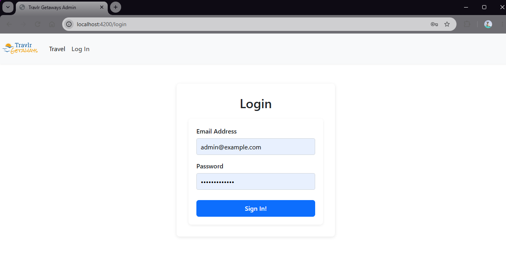
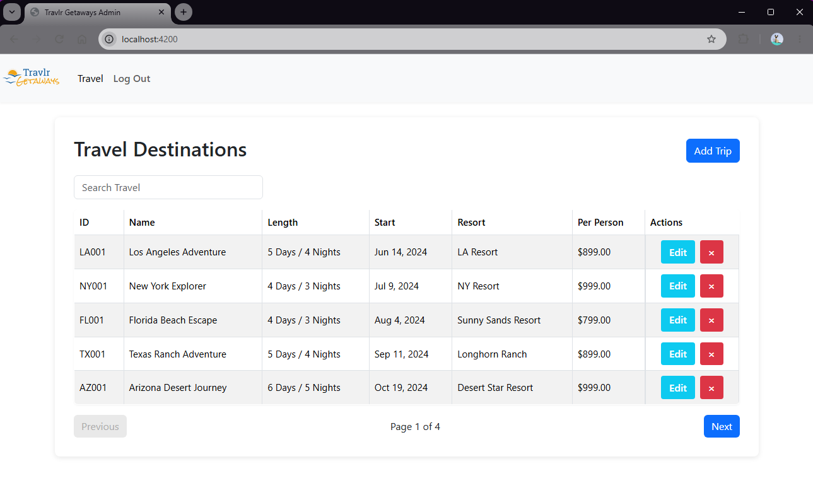
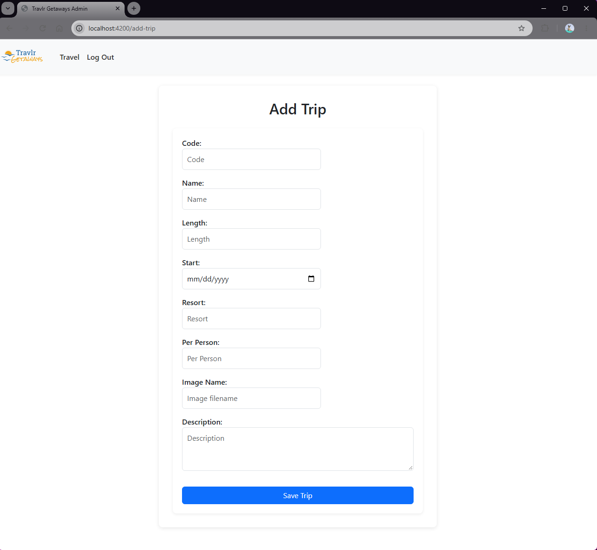
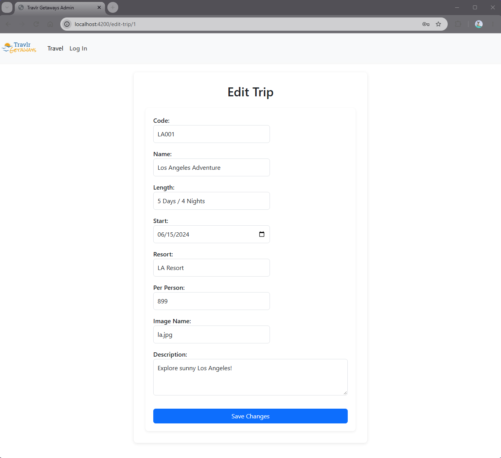
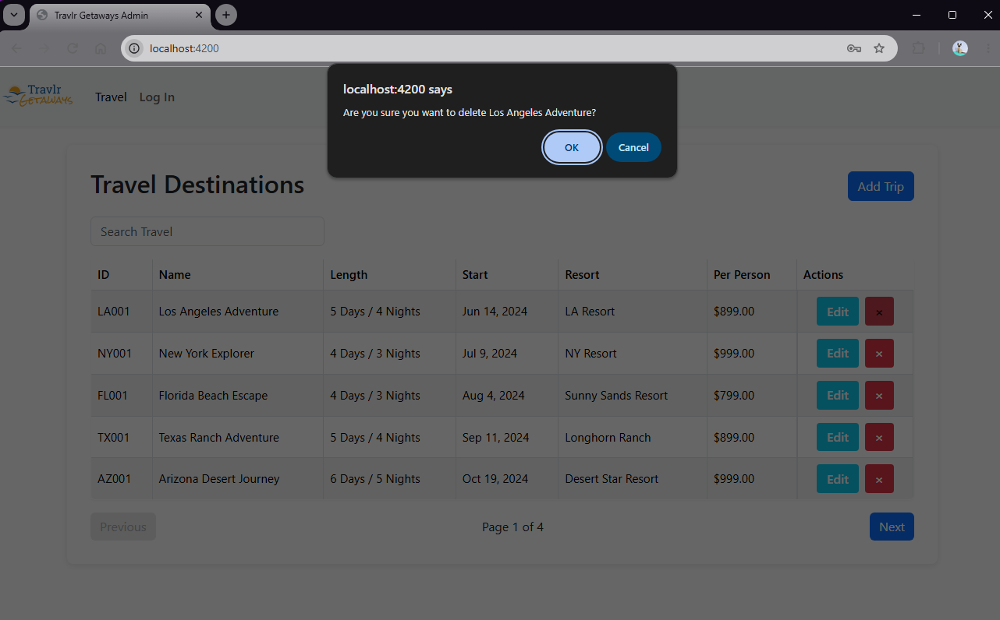
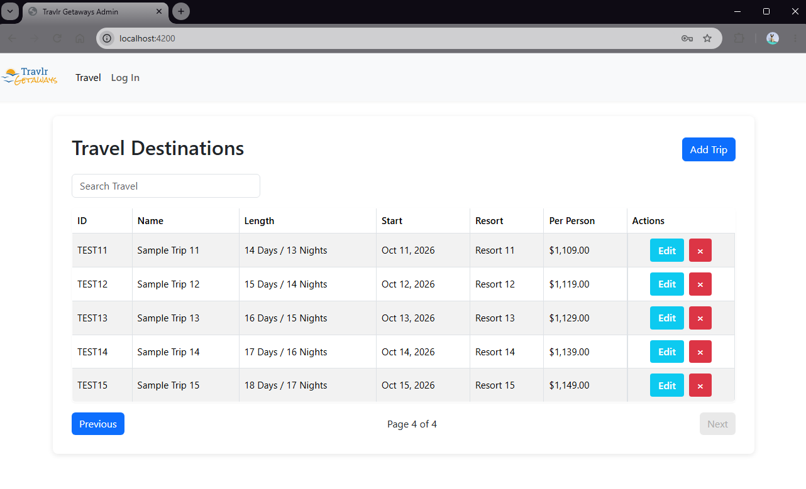
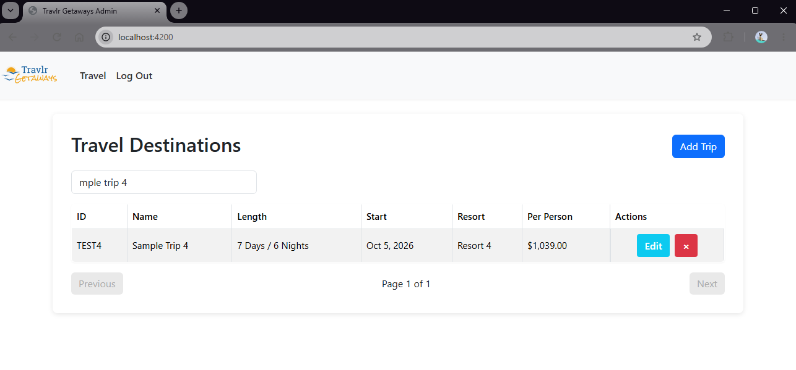

CS‑499: Computer Science Capstone • Southern New Hampshire University
The Travlr Getaways admin interface is the portion of my full‑stack application where all of my CS‑499 enhancements can be viewed. This includes the updated authentication flow, role‑based access control, trip management features, and the improved search, sorting, and pagination logic.
To explore the admin‑restricted pages, you may use the demo credentials below. This account exists solely for evaluation and portfolio review.
Email: admin@example.com
Password: Password123!
After logging in, you will be able to view the trip listing page, add new trips, edit existing trips, and see how the enhanced validation, sanitization, and database operations work within the application.
The original Travlr Getaways application was built as a full MEAN‑stack system using MongoDB, Express, Angular, and Node.js, including JWT‑based authentication and persistent database storage.
For the purposes of CS‑499 demonstration and deployment, the admin interface was refactored to use Angular’s In‑Memory Web API, allowing the application to run entirely client‑side with dummy data and a temporary demo admin account.
This allows the authentication flow, role‑based access control, CRUD operations, validation, sanitization, and pagination to be evaluated directly in the live Netlify deployment without requiring a hosted backend.
The complete original MEAN‑stack implementation remains available in a separate GitHub repository, linked above.
This screenshot shows the admin login form used to access restricted features within the Travlr Getaways application.

This page displays all trips retrieved from the in‑memory backend and allows for searching, filtering, pagination, and role‑restricted CRUD controls.

This form allows administrators to create new trips.

This page allows administrators to update details for existing trips.

This screenshot shows the confirmation dialog that appears before removing a trip.

This view shows how additional sample trips populate subsequent pages.

This screenshot shows the dynamic search feature, which filters trips by name, resort, or code in real time.
